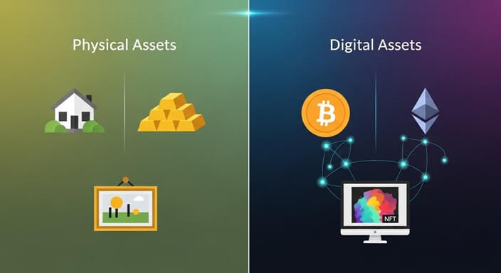
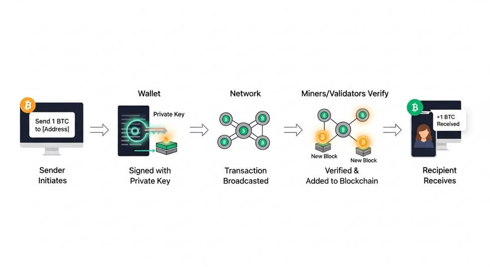

Key Takeaways
- Digital assets are items of value that exist purely in digital form (e.g., cryptocurrencies, tokens, stablecoins, NFTs).
- Ownership and transfers are recorded on blockchains—shared digital ledgers visible to all participants.
- You can acquire digital assets via exchanges, as payment, or by mining/earning them; they are stored in wallets that protect your private keys.
- Transactions involve signing messages with your private key and paying a small network fee; confirmations are recorded on-chain.
- Major risks include extreme price volatility, scams, theft, loss of private keys, and evolving regulations. Never invest more than you can afford to lose.
What Are Digital Assets? (Cryptocurrency & Beyond)
A digital asset is anything valuable that exists only in digital form. Examples range from everyday files (like photos) to blockchain-based assets:
- Cryptocurrencies – digital money such as Bitcoin or Ether.
- Tokens – units issued on existing blockchains that can represent utility, governance rights, or shares in a project.
- Stablecoins – cryptocurrencies designed to track the value of a stable asset (such as one US dollar).
- NFTs (Non-Fungible Tokens) – unique tokens often used for digital art or collectibles.
Unlike physical cash or gold, these assets have no tangible form. Instead, a blockchain—think of it as a shared digital notebook—records who owns what. Because the notebook is copied across thousands of computers, tampering is extremely difficult.
How to Acquire and Store Digital Assets
Common Ways to Acquire
- Buy on an exchange: Use dollars (or other currency) to purchase crypto on a regulated platform.
- Accept as payment or gift: Receive crypto from another person or business.
- Earn or mine: Contribute computing power or services and be rewarded in tokens.
Wallets & Private Keys
A wallet is software or hardware that stores your private keys—secret codes proving ownership.
Analogy: If the blockchain is a public mailbox, your private key is the only key that can open your personal slot. Lose it, and you lose access forever.
- Custodial wallet: A third-party service (like an exchange) holds the keys on your behalf—convenient, but you must trust them.
- Self-custody wallet: You hold your own keys, often using a hardware device kept offline. Ultimate control, but full responsibility.
Using Digital Assets in Transactions
Sending cryptocurrency is like emailing value:
- Your wallet creates a message: “Send X coins to address Y.”
- You sign the message with your private key (proving authorization).
- The network verifies the signature and adds the transaction to the next block.
A small transaction fee (often called gas) pays validators for processing. Confirmations can take seconds to minutes, depending on network congestion.
Many people hold crypto instead of spending it due to price swings—values rise and fall quickly. Others use crypto debit cards, online merchants, or peer-to-peer transfers for everyday spending.
Risks & Important Considerations
- Volatility: Prices can change by double-digit percentages within hours. You could lose your entire investment.
- Security: Losing a private key means permanent loss. Online services can be hacked or go bankrupt.
- Scams & Fraud: Phishing emails, fake tokens, and Ponzi schemes are common. Verify everything.
- Regulatory Uncertainty: Laws vary by country and can change quickly. Tax reporting is required in many jurisdictions.
- No Implicit Endorsements: Mentions of Bitcoin, Ethereum, or any platform are for illustration only—LIFT does not recommend any specific asset.
The following links are provided for educational and informational purposes only. Literacy & Innovation in Financial Technology Alliance (LIFT) does not endorse any of the organizations, products, services, or opinions presented on these external sites. LIFT is not responsible for the accuracy or content of external sites. We encourage you to conduct your own research.
Further Reading & Sources
This material is for educational purposes only and does not constitute financial, legal, or tax advice.